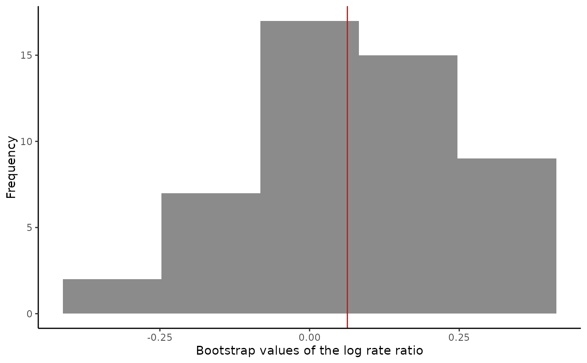
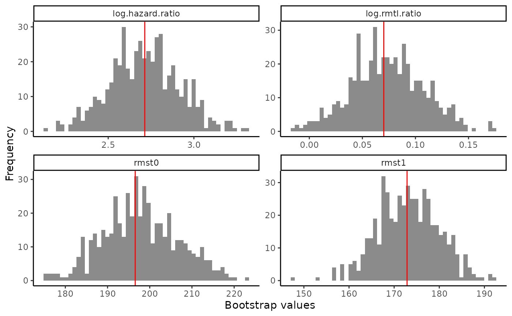

Doubly robust estimator of and inference for the average treatment effect for count, survival and continuous data
Source:R/ATE.R
atefit.RdDoubly robust estimator of the average treatment effect between two treatments, which is the rate ratio for count outcomes, the restricted mean time lost ratio for survival outcomes and the mean difference for continuous outcome. Bootstrap is used for inference.
Usage
atefit(
response,
data,
cate.model,
ps.model,
ps.method = "glm",
ipcw.model = NULL,
ipcw.method = "breslow",
minPS = 0.01,
maxPS = 0.99,
followup.time = NULL,
tau0 = NULL,
surv.min = 0.025,
interactions = TRUE,
n.boot = 500,
seed = NULL,
verbose = 0
)Arguments
- response
A string describing the type of outcome in the data. Allowed values include "count" (see
catecvcount()), "survival" (seecatecvsurv()) and "continuous" (seecatecvmean()).- data
A data frame containing the variables in the outcome, propensity score, and inverse probability of censoring models (if specified); a data frame with
nrows (1 row per observation).- cate.model
A formula describing the outcome model to be fitted. The outcome must appear on the left-hand side. For survival outcomes, a
Survobject must be used to describe the outcome.- ps.model
A formula describing the propensity score (PS) model to be fitted. The treatment must appear on the left-hand side. The treatment must be a numeric vector coded as 0/1. If data are from a randomized controlled trial, specify
ps.model = ~1as an intercept-only model.- ps.method
A character value for the method to estimate the propensity score. Allowed values include one of:
'glm'for logistic regression with main effects only (default), or'lasso'for a logistic regression with main effects and LASSO penalization on two-way interactions (added to the model if interactions are not specified inps.model). Relevant only whenps.modelhas more than one variable.- ipcw.model
A formula describing the inverse probability of censoring weighting (IPCW) model to be fitted. The left-hand side must be empty. Only applies for survival outcomes. Default is
NULL, which corresponds to specifying the IPCW with the same covariates as the outcome modelcate.model, plus the treatment.- ipcw.method
A character value for the censoring model. Only applies for survival outcomes. Allowed values are:
'breslow'(Cox regression with Breslow estimator of t he baseline survivor function),'aft (exponential)','aft (weibull)','aft (lognormal)'or'aft (loglogistic)'(accelerated failure time model with different distributions for y variable). Default is'breslow'.- minPS
A numerical value (in `[0, 1]`) below which estimated propensity scores should be truncated. Default is
0.01.- maxPS
A numerical value (in `(0, 1]`) above which estimated propensity scores should be truncated. Must be strictly greater than
minPS. Default is0.99.- followup.time
A column name in
dataspecifying the maximum follow-up time, interpreted as the potential censoring time. Only applies for survival outcomes. Default isNULL, which corresponds to unknown potential censoring time.- tau0
The truncation time for defining restricted mean time lost. Only applies for survival outcomes. Default is
NULL, which corresponds to setting the truncation time as the maximum survival time in the data.- surv.min
Lower truncation limit for the probability of being censored. It must be a positive value and should be chosen close to 0. Only applies for survival outcomes. Default is
0.025.- interactions
A logical value indicating whether the outcome model should assume interactions between
xandtrt. Applies only to count outcomes. IfTRUE, interactions will be assumed only if at least 10 patients received each treatment option. Default isTRUE.- n.boot
A numeric value indicating the number of bootstrap samples used. Default is
500.- seed
An optional integer specifying an initial randomization seed for reproducibility. Default is
NULL, corresponding to no seed.- verbose
An integer value indicating whether intermediate progress messages and histograms should be printed.
1indicates messages are printed and0otherwise. Default is0.
Value
For count response, see description of outputs in atefitcount().
For survival response, see description of outputs in atefitsurv().
Details
For count response, see details in atefitcount().
For survival response, see details in atefitsurv().
Examples
# Count outcome
output <- atefit(response = "count",
data = countExample,
cate.model = y ~ age + female + previous_treatment +
previous_cost + previous_number_relapses +
offset(log(years)),
ps.model = trt ~ age + previous_treatment,
n.boot = 50,
seed = 999)
#> Warning: Variable trt was recoded to 0/1 with drug0->0 and drug1->1.
#>
output
#> Average treatment effect:
#>
#> estimate SE CI.lower CI.upper pvalue
#> log.rate.ratio 0.06311746 0.1624482 -0.2552752 0.3815101 0.6976173
#>
#> Estimated event rates:
#>
#> estimate
#> rate1 0.2860635
#> rate0 0.2685660
#>
#> Warning: Variable trt was recoded to 0/1 with drug0->0 and drug1->1.
plot(output)

# \donttest{
# Survival outcome
tau0 <- with(survivalExample,
min(quantile(y[trt == "drug1"], 0.95), quantile(y[trt == "drug0"], 0.95)))
output2 <- atefit(response = "survival",
data = survivalExample,
cate.model = survival::Surv(y, d) ~ age + female +
previous_cost + previous_number_relapses,
ps.model = trt ~ age + previous_treatment,
tau0 = tau0,
seed = 999)
#> Warning: Variable trt was recoded to 0/1 with drug0->0 and drug1->1.
#>
output2
#> Average treatment effect:
#>
#> estimate SE CI.lower CI.upper pvalue
#> log.rmtl.ratio 0.0701553 0.03420455 0.003115612 0.137195 0.04026192
#> log.hazard.ratio 2.7133243 0.20390310 2.313681567 3.112967 0.00000000
#>
#> Estimated RMST:
#>
#> estimate SE CI.lower CI.upper pvalue
#> rmst1 172.8609 6.774625 159.5829 186.1389 0
#> rmst0 196.5603 8.904742 179.1073 214.0132 0
#>
#> Warning: Variable trt was recoded to 0/1 with drug0->0 and drug1->1.
plot(output2)

# }